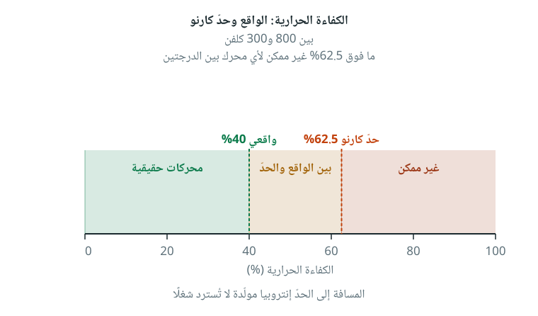

القانون الثاني للديناميكا الحرارية
Second Law of Thermodynamics
الإنتروبيا الكلية لنظام معزول لا تنقص؛ كل عملية حقيقية تولّد إنتروبيا، فيبقى جزء من الطاقة غير قابل للتحويل إلى شغل، وهذا القيد مستقل عن كمّية الطاقة.
للقانون الثاني صيغتان متكافئتان. صيغة كلاوزيوس: لا تنتقل الحرارة تلقائيًّا من جسم بارد إلى جسم أسخن بلا شغل خارجي. صيغة كلفن–بلانك: لا توجد دورة تعمل بخزّان حراري واحد وتحوّل حرارته كلها شغلًا. الصيغتان تعبّران عن قيد واحد: الإنتروبيا الكلية لنظام معزول لا تنقص.
عمليًّا تظهر النتيجة في كل محرك حراري: تُؤخذ حرارة من خزّان ساخن، ويُبذل شغل، وتُطرح بقية الحرارة في خزّان بارد. لا مفرّ من الخزّان البارد، ولو أُغلق لارتفعت حرارة العادم حتى تتساوى الدرجتان ويتوقف الشغل. لذلك تُقاس جودة الطاقة بدرجة حرارتها لا بمقدارها فقط: الكيلوجول عند 800 كلفن قادر على شغل أكبر من الكيلوجول نفسه عند 320 كلفن.
كيف تعمل الظاهرة؟
كل عملية حقيقية تحمل عدم رجوعية: احتكاك، توصيل حراري عبر فرق محدود، خلط، تمدد حرّ. في كل منها تتحول طاقة منظمة إلى حركة جزيئية عشوائية، ويستحيل استردادها كاملة لأن الاسترداد يتطلب ترابطًا في سرعات الجزيئات، والتصادمات تمحو هذا الترابط.
في المحرك الحراري تُستهلك الحرارة Q_h من الخزّان الساخن، ويُبذل الشغل W، وتُطرح Q_c في الخزّان البارد. لو أُعيدت Q_c إلى الخزّان الساخن لعاد النظام إلى بدايته، لكن ذلك يحتاج ضاغطًا يبذل شغلًا؛ وبدونه يزيد مجموع إنتروبيا الخزّانين. موازنة الإنتروبيا للمحرك: ΔS = Q_h/T_h − Q_c/T_c + S_gen، و S_gen أكبر من الصفر في كل محرك حقيقي.
العلاقة بالأرقام
بين 800 و300 كلفن يكون الحدّ الأعلى للكفاءة 1 − 300/800 = 62.5%. محرك حقيقي بين الدرجتين نفسهما يبلغ 40%، أي أنه يحقق 0.64 من الحدّ؛ الفرق 22.5 نقطة مئوية يذهب إنتروبيا مولّدة لا تُسترد شغلًا.
مثال نقل حراري: إمرار 1 كيلوجول من جسم عند 500 كلفن إلى جسم عند 300 كلفن يولّد 1.33 جول/كلفن، لأن الحرارة نفسها تحمل إنتروبيا أقل عند الدرجة الأعلى. العملية العكوسة تولّد 0 جول/كلفن بالتعريف، ولا توجد عملية حقيقية بهذا المقدار لأن فرق الحرارة المحدود شرط لسرعة الانتقال، وسرعة الانتقال تقتضي عدم رجوعية.
مفاهيم متقاربة
الخلط الأول: «القانون الثاني يقول إن الكفاءة لا تبلغ 100%». الدقة أن الكفاءة محدودة بحدّ كارنو 1 − Tc/Th، وقد يكون هذا الحدّ 21.4% بين 373 و293 كلفن، لا 100%. الخلط الثاني: القانون لا يمنع التبريد ولا ينفي نقص الإنتروبيا محليًّا؛ المبرّد ينقل حرارة من بارد إلى ساخن بشرط أن يولّد في المحيط إنتروبيا أكبر مما يزيله من الداخل.
الخلط الثالث: الحرارة لا تنتقل من البارد إلى الساخن في المبرّد والمضخة الحرارية «بلا مقابل»؛ تنتقل ببذل شغل، وهو ما يعبّر عنه معامل الأداء. الخلط الرابع: الإنتروبيا ليست مقياس «الطاقة الضائعة» بحد ذاتها، بل مقياس عدم قابلية الاسترداد؛ ويُقاس الفاقد العملي بالطاقة الحرة التي تعتمد أيضًا على درجة المحيط.
حدود التطبيق
النص المطلق (الإنتروبيا لا تنقص) ينطبق على نظام معزول أو على مجموع نظام ومحيطه، لا على جزء منه. في أنظمة الجذب الذاتي (نجوم، سدم) لا تصلح صيغة بولتزمان الحدّية لأن سعة الحرارة السالبة تجعل النظام غير مستقر، وتُستخدم صيغ إنتروبيا أخرى.
في المقاييس النانوية تخالف العمليات القصيرة اتجاه الإنتروبيا باحتمال قابل للحساب (نظرية التذبذب)، وحدّ لانداور يفرض k_B·T·ln2 من الحرارة على الأقل لمحو بت واحد. ولا يحدد القانون الثاني زمن العملية أو سرعتها؛ يحدد اتجاهها، أما السرعة فتحتاج حركية وانتقال حرارة، وهو موضوع الديناميكا الحرارية للزمن المحدود.

| الكمية | القيمة | المصدر |
|---|---|---|
| حدّ كارنو للكفاءة بين 800 و300 كلفن | 62.5 % | [1] |
| الإنتروبيا المولّدة عند نقل 1 kJ من 500 إلى 300 كلفن | 1.33 جول/كلفن | [2] |
| الإنتروبيا المولّدة في عملية عكوسة | 0 جول/كلفن | [2] |
| نسبة كفاءة محرك حقيقي 40% إلى حدّ كارنو | 0.64 بلا وحدة | [1] |
المصادر
- 1 Statements of the Second Law of Thermodynamics — OpenStax, University Physics Volume 2. openstax.org/books/university-physics-volume-2/pages/4-4-statements-of-the-second-law-of-thermodynamics · اطُّلع عليه 2026-11-16
- 2 Reversible and Irreversible Processes — OpenStax, University Physics Volume 2. openstax.org/books/university-physics-volume-2/pages/4-1-reversible-and-irreversible-processes · اطُّلع عليه 2026-11-16
- 3 Entropy — NASA Glenn Research Center — Beginner's Guide to Aeronautics. www1.grc.nasa.gov/beginners-guide-to-aeronautics/entropy/ · اطُّلع عليه 2026-11-16
استشهد بهذا المصطلح
الصيغتان مبنيتان من بيانات الصفحة نفسها: العنوان والتاريخ ورابط النسخة المنشورة.
القانون الثاني للديناميكا الحرارية — Second Law of Thermodynamics. (2026). ديوان المعرفة — انفراد. https://infiradev.com/diwan/terms/second-law-thermodynamics.html
@misc{second-law-thermodynamics2026,
title = {القانون الثاني للديناميكا الحرارية},
titleaddon = {Second Law of Thermodynamics},
howpublished = {{ديوان المعرفة — انفراد} — مرجع علمي عربي},
year = {2026},
url = {https://infiradev.com/diwan/terms/second-law-thermodynamics.html},
urldate = {2026-11-16},
note = {مراجعة علمية: مراجعة آلية — ديوان المعرفة (روابط المصادر + عقد المحتوى + وجود الرسم) 2026-11-16}
}
راجعه: مراجعة آلية — ديوان المعرفة (روابط المصادر + عقد المحتوى + وجود الرسم) 2026-11-16 · 2026-11-16 · آخر تحديث 2026-11-16